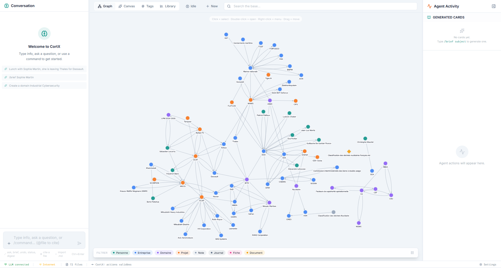

Structuring agent
Type raw text — the agent identifies entities (people, companies, domains, projects, journal entries), creates or updates Markdown files, adds [[wikilinks]] automatically.
An AI-powered second brain that writes your knowledge base for you. Drop a raw thought — CortX identifies entities, creates Markdown files, weaves wikilinks. Git commits everything automatically.

The #1 barrier to a real "second brain" isn't the tool. It's the cognitive overhead of maintenance: naming, tagging, linking, filing.
CortX brings that cost to zero. You type raw text. The agent does the rest.
Five concrete moments where CortX removes the friction of remembering.
Type 3 lines about who you saw, what they're working on, what they said. The agent updates their profile, links to their company, logs the interaction with today's date — automatically.
Drop the PDF into the library. docling extracts clean text + tables. The agent finds which of your existing topics it touches, suggests new connections, and you can ask questions directly against the contents.
Paste your raw notes. The agent extracts decisions, action items, mentioned projects, attendees — proposes the diff. You hit Approve. Done in 5 seconds.
Ask the chat. The hybrid RAG retrieval pulls the right files, follows wikilinks for context, and the agent answers citing your own notes. No more hunting through folders.
Idle Mode quietly explores your graph and surfaces patterns: contradictions between two notes, missing relationships, recurring themes across projects. Promote any insight to a permanent fiche.
Type /wiki Notion or /internet latest SCAF news. Wikipedia + a live DuckDuckGo search are pulled in, summarized, woven into your existing notes — proposed for review.
Markdown stays the source of truth. Pick how you want to talk to it today.
Type a thought, paste meeting notes, drop a quote. The agent reads context from your base (RAG + multi-hop), figures out which entities are involved, and proposes a diff. Streaming token-by-token, abortable mid-generation.
/ask — read-only Q&A with citations/brief topic — generate a structured fiche/synthese — synthesize across multiple notes/digest — daily/weekly recap from your journalCortX never locks your files. Open the preview pane, switch to edit mode, type freely. Ctrl+S commits your changes through Git and reindexes everything.
title · first H1 · filename)[[oldTitle]] across the entire base get rewritten automatically.md — Obsidian, VS Code, any editor still worksCytoscape · cose-bilkent renders every entity and relation in real time. Filter by type, search by name, double-click to expand neighborhoods. Library documents appear as nodes too — bidirectional auto-linking shows mentions both ways.
PDF, DOCX, PPTX, XLSX, HTML, TXT, MD — all extracted by the docling Python sidecar, chunked, vectorized with e5-small embeddings. The library becomes part of the same RAG context as your notes.
[[DocTitle]] in your notes binds to library docs; library docs mentioning your entities create reverse linksTwo directives, three modes. Web content is fetched, cleaned (main content extracted, nav/footer stripped), language-aware (FR/EN with English fallback) and injected into the agent's context window before it proposes any change.
/wiki Notion — full Wikipedia article → proposed .md file/internet https://... — single URL, readable main content only/internet <query> — DuckDuckGo HTML SERP → top ~4 pages fetched in parallel/internet alone — uses the rest of your sentence as the queryConnect a Telegram bot token once, whitelist your chat ID, and CortX becomes reachable from anywhere. Type a raw thought, paste meeting notes, or use a command — the agent processes it through the same pipeline as the desktop chat, then sends back a structured proposal with inline ✔ / ✗ buttons. Validate remotely. Your base gets a commit.
/ask <question> — Q&A against your base, citations in reply/note <text> — force-capture mode, skips Q&A detection/status — short KB summary (file count, last action)
Most "PDF chat" tools dump raw text and lose half the meaning. CortX uses docling, IBM's open-source document parser — preserving tables as tables, headings as structure, page numbers as anchors, equations and lists faithfully. The result: the agent quotes the right page, your graph links to the right document.
Spreadsheet-style data stays queryable, not flattened into prose.
Section structure feeds chunk metadata for accurate retrieval.
Citations point to a real page range, not a vague excerpt.
Equations, ordered lists, code blocks survive the round trip.
Library docs ↔ KB entities cross-link without a single tag.
384-dim vectors per chunk, cached locally. Fast hybrid search.
An agent that writes your files — not a chatbot that just talks.
Type raw text — the agent identifies entities (people, companies, domains, projects, journal entries), creates or updates Markdown files, adds [[wikilinks]] automatically.
Every action is previewable (before/after diff) and requires explicit approval. Nothing is written to disk without your sign-off.
Real-time Cytoscape · cose-bilkent. 7 entity types, 19 inferred relation kinds. Library docs as nodes. Idle Mode highlights live exploration.
FTS5 full-text + semantic embeddings. After initial retrieval, multi-hop expansion follows wikilinks & library chunk references for cross-file context.
Import PDF, DOCX, XLSX, PPTX, HTML, TXT. docling extracts clean structure; e5-small embeddings power lexical / semantic / hybrid search.
Background loop explores your graph: contradictions, gaps, recurring patterns. Review the draft queue, dismiss, or promote insights to permanent fiches.
/wiki imports an article, /internet fetches a URL or runs a DuckDuckGo search. No API key, no account, language-aware.
Every accepted action = a commit (isomorphic-git). Full history, one-click undo (git revert), built-in agent_log audit table.
Edit any file in-app. Save commits + reindexes. Live indicator shows which element drives the graph node label (frontmatter / H1 / filename).
Change a title once. CortX rewrites [[oldTitle]] across the entire base in one pass. Toast tells you how many links updated.
Watch the agent think token-by-token. Cancel mid-generation if the direction is wrong. Works on Anthropic and any OpenAI-compatible endpoint.
Full UI in English and French. Web search and Wikipedia run in the active language with English fallback. Idle insights generated in your language.
Send a note from anywhere — the bot relays it through the full agent pipeline and returns a proposal with inline ✔ / ✗ buttons. Accept remotely, get a commit hash back. No app needed.
The agent understands context, decomposes entities, proposes changes. You approve.
"Coffee with Sarah Kim. She left OpenAI to co-found Redline, an AI safety startup. Mentioned that Anthropic's Constitutional AI V2 paper drops Q3 — apparently it addresses the scalable oversight problem directly."
From a single raw note, the agent identifies 3 people, 3 companies, 1 domain, modifies 2 files, creates 1 new file, and maintains all cross-links — in under 3 seconds.
Plug in a local LLM for full privacy, or an API key for maximum reasoning power.
Ollama · llama.cpp · LM Studio. Zero data leaves your machine. No account, no subscription, no key check.
Claude (Anthropic) or any OpenAI-compatible /v1/chat/completions endpoint. Best reasoning quality.
Most people are productive within 10 minutes — including LLM setup.
Grab the latest release for your OS:
CortX-Setup-x.y.z.exe (NSIS)CortX-x.y.z.dmg (universal)On first launch, Settings → Base path. The default is ~/Documents/CortX-Base/ — change it if you want your notes living elsewhere (e.g. inside an iCloud / OneDrive folder).
A Git repo is auto-initialized inside it. Every accepted action becomes a commit.
Two paths — pick one:
Install Ollama or LM Studio. Pull a model (ollama pull qwen2.5:14b). In Settings → Provider = OpenAI-compatible, endpoint = http://localhost:11434/v1. No API key needed.
Get a key from Anthropic. Paste it into Settings → Provider = Anthropic. Key stored locally, masked in the UI as ***.
If you want to import PDF / DOCX / PPTX / XLSX, install Python 3.10+ then:
pip install docling sentence-transformersFirst import bootstraps docling models (~10 min once). After that, indexing is fast and offline.
Open the chat panel. Drop in a real thought — a person you met, a paper you read, a project you're starting. Within seconds the agent will propose a structured set of files. Hit Accept. Watch your graph come alive.
› That's it. Every accepted change is a Git commit. Every undo is one click.
| Mem.ai | Khoj | Obsidian + AI | CortX | |
|---|---|---|---|---|
| Agent writes the files | ✕ | ✕ | ✕ | ✓ |
| Local Markdown files | ✕ | ✕ | ✓ | ✓ |
| 100% local LLM possible | ✕ | ✓ | ✕ | ✓ |
| Knowledge graph built-in | ✕ | ✕ | ✓ (plugin) | ✓ |
| Propose-then-execute | ✕ | ✕ | ✕ | ✓ |
| Git versioning + undo | ✕ | ✕ | ✕ | ✓ |
| docling document import | ✕ | partial | partial | ✓ |
Node.js 20+ · Git · a local or cloud LLM · (optional) Python + docling
# clone
git clone https://github.com/gcorman/CortX.git && cd CortX
# install
npm install
# run
npm run dev # dev mode with HMR
npm run dist # build installer for current OS (Windows NSIS / macOS DMG)
npm run rebuild # if better-sqlite3 fails — recompiles native bindings_System/ directory. Use whatever editor you like. CortX polls the filesystem and reindexes when it sees changes./wiki, /internet) obviously needs a connection, but the rest — chat, graph, library, idle mode — runs without one.You speak. The agent structures. Git versions. Everything stays on your machine.